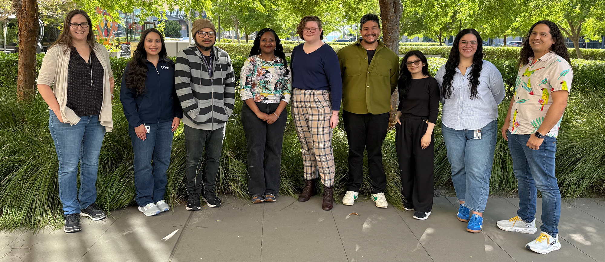
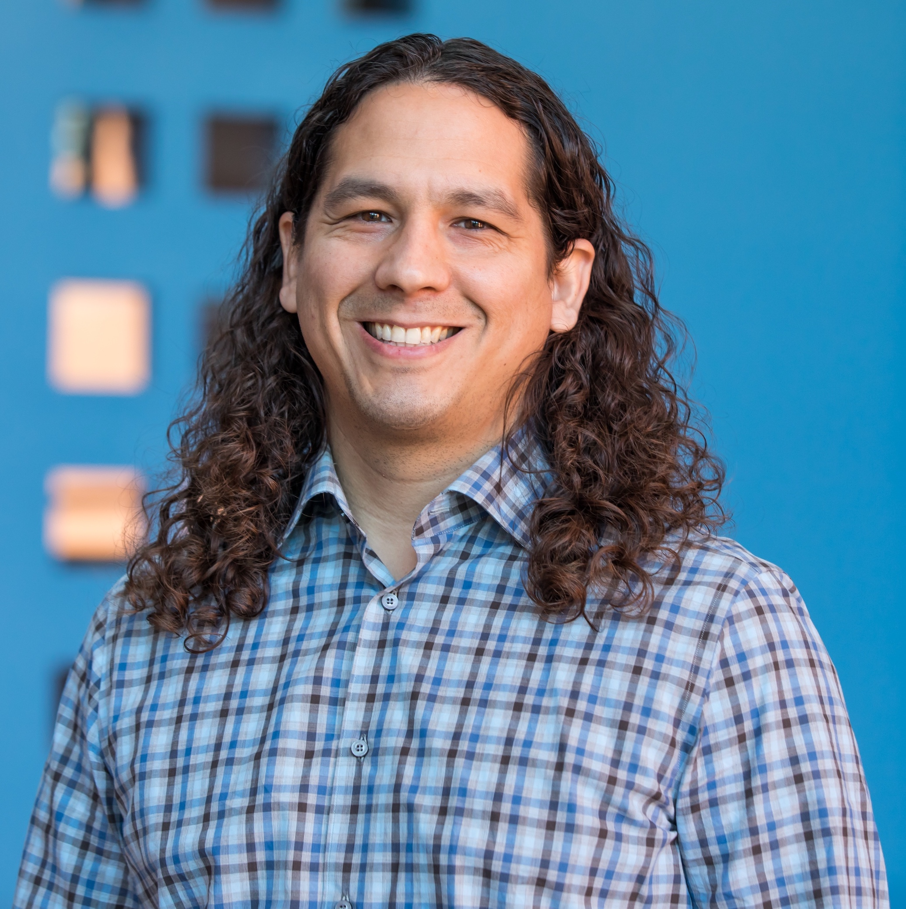
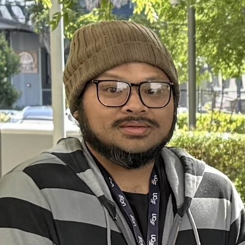
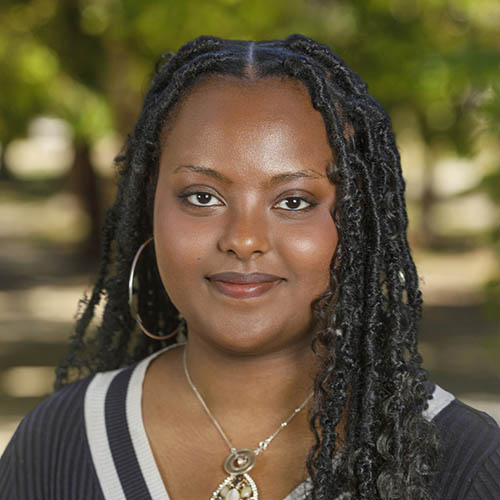
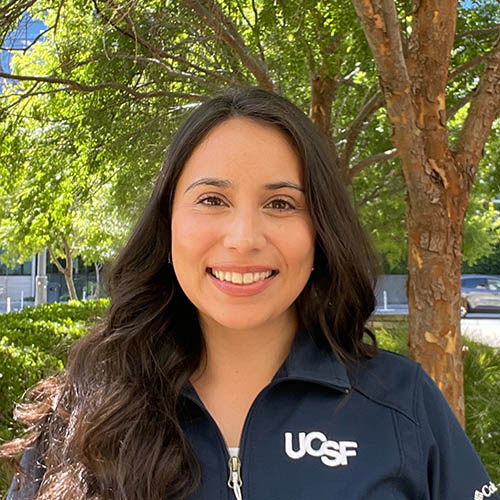
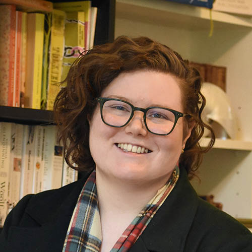
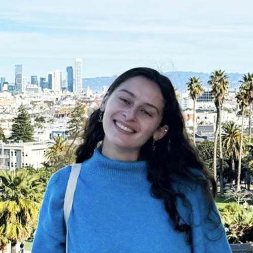

THeLab: Torgerson + Hernandez Lab
The Team at THeLab

THeLab Members

Ryan Hernandez, PhD
he/him/his
Principal Investigator (2010-)
Professor, Bioengineering & Therapeutic Sciences
Co-director: PROPELOpens in new tab and PREPOpens in new tab postbaccalaureate programs
Co-director: BMIOpens in new tab PhD program
Co-lead: ARCHESOpens in new tab faculty development
ryan.hernandez (at) ucsf.edu
[ORCIDOpens in new tab ] [Google ScholarOpens in new tab ] [BlueskyOpens in new tab ] [LinkedInOpens in new tab ]
How do evolutionary forces shape genetic variation and the architecture of complex traits?
I grew up in San Leandro, CA (go SL PIrates!), studied Math at Pitzer College, earned a PhD in Biometry at Cornell University, and trained as a postdoc at the University of Chicago before starting as a PI in 2010.
In THeLab: I like to work with scholars to develop new scientific questions to understand how demography and natural selection shape human genetic variation and their impact on molecular and complex traits.
Outside THeLab: Amateur baker, being a dad, mentor, and building platforms to support & encourage the next generation of scientific leaders.
[photo]
Dara
Bio
[photo]
Miguel Guardado, PhD
he/him
PhD Student (2020-2025)
Interim PostDoc (2025-)
Biological and Medical Informatics
HHMI Gilliam Fellow (2022-2025)
Miguel.Guardado (at) ucsf.edu
[ORCIDOpens in new tab ] [Google ScholarOpens in new tab ] [LinkedinOpens in new tab ]
Miguel grew up in Northern California, calling both San Francisco and Sacramento home. He is a first-generation scholar and a proud product of San Francisco public higher education, earning his B.S. in Applied Mathematics from San Francisco State University and his Ph.D. from UCSF. At SFSU, Miguel worked under Dr. Rohlfs, applying population and statistical genetics methods to investigate disparities in forensic genetic identification technologies. This work inspired his interest in translating insights about genetic diversity and ancestry into biomedical applications, ultimately leading him to join THe Lab to help advance equitable precision medicine.
Inside THe Lab: Miguel investigated the genomic and metabolomic basis of respiratory diseases in premature infants and studied how ancestry can be represented and leveraged in large, diverse datasets to better understand human disease and improve precision medicine.
Outside THe Lab: Miguel spent much of his Ph.D. serving on the SACNAS and ASGD boards. Outside of research, you can often find him at a Giants or 49ers game, out on a run, lifting at the gym, cooking and baking, playing disc golf, or spending time with his cockatiel, Bimbo, and his dog, Mushu.

Steven Someakea Sun, future PhD
he/him
PhD Student (2020-)
Tetrad - Genetics
Steven.Sun (at) ucsf.edu
[ORCIDOpens in new tab ] [LinkedinOpens in new tab ]
What evolutionary mechanisms are driving high genetic variation in the human genome?
Steven grew up in a war refugee family on government assistance in Santa Ana, CA. Through his US Army service, Steven received the Post-9/11 GI Bill, funding most of his undergraduate education. Ultimately, he earned a MS in Biology from SF State. The NIH MARC and RISE fellowships Steven received while at SF State were the reasons he decided to pursue a research career.Steven’s general interest in the life sciences stems from a childhood spent catching crawfish, frogs, and fish in Santa Ana, getting chased by the neighborhood chihuahua and watching PBS shows.
In THeLab: Running simulations on models of associative overdominance and balancing selection to try recapitulating observed diversity patterns. Engages in definitional problems tied to human genetic variation with anti-typological fervor. Occasionally naps under his desk on a mat intended for his dog.
Outside THeLab: Hoards books and occasionally reads them, climbs trees and rocks, playing with pets, attempts to cook vegetarian versions of meat dishes he dearly misses.
[photo]
Thaybeth
2022-

Sarina Garcia, future PhD
she/her
PhD Student (2023-)
Pharmaceutical Sciences and Pharmacogenomics
sarina.garcia (at) ucsf.edu
[ORCIDOpens in new tab ] [Google ScholarOpens in new tab ] [LinkedInOpens in new tab ]
Do genetic factors drive variability in clincal response in extremely premature infants?
Sarina graduated from the University of Texas at Austin with a degree in Biology and is currently pusuring a PhD in Pharmaceutical Sciences and Pharmacogenomics. at UCSAF.
In THeLab: Sarina is currently leading a project looking at...
Outside THeLab: Sarina serves as Co-Director of Resource Development for Project SHORT, a nonprofit dedicated to making graduate education more accessible by providing mentorship and application support to prospective graduate students. In her free time, she enjoys reading and trying new restaurants around the Bay Area with friends.

Etenesh Seifu Abebe
she/her
Post-Bacculerate Scholar (2025-)
UCSF-PREP
PROPEL Welcoming Committee
etenesh.abebe[at]ucsf.edu
[ORCID] [Google Scholar] [LinkedInOpens in new tab ]
What drives cancer disparties and how much does genetic variation and genetic ancestry play a role in cancer disparties?
Etenesh graduated from UCSC (go slugs!) with a degree in Biomolecular Engineering and Bioinformatics. During her time at UCSC she developed a broad intrest in genetics research, but really found her stride in the Jonsson Lab exploring what leads to breast cancer disparties and also trying to find solutions for disparties in treatment outcomes of cancer immunotherapies.
These experiences sparked her intrest in understanding the interplay between genetics, ancestry, and the social and enviormental factors that influence cancer risk, proggression and treatment outcomes. She is motivated by questions at the intersection of human genetic variation and health equity, with the goal of uncovering biological insights that can contribute to more equitable disease prevention and treatment stratgeies.
In THe Lab: Building research cohorts from clinical tumor panel data.
Outside THe Lab: Etenesh really enjoys reading, movie nights with friends, and trying to go to every musem in the Bay Area.

Marisol Contreras, future PhD
she/her
PhD Student (2025-)
Pharmaceutical Sciences and Pharmacogenomics
marisol.contreras (at) ucsf.edu
Can the Lung Microbiome and HLA Predict Asthma and Bronchopulmonary Dysplasia Severity?
Fueled by curiosity and grit, Marisol is a first-generation college graduate of UC Davis, where she earned a B.S. in Genetics and Genomics with a minor in Public Health Sciences. Before returning to graduate school, she spent two years as a rotational scientist at Genentech, collecting lab stories, building scientific skills, and gaining a deep appreciation for how science rarely goes as planned but often leads somewhere meaningful. She went on to complete her M.S. in Biology with a concentration in Cell and Molecular Biology at San Francisco State University.
In THeLab: Programming statistical and bioinformatic analyses
Outside THeLab: Tutoring and mentoring kids with hands-on science experiments, enthusiastic supporter of both learning and lattes and enjoys movies. Alongside her academic journey, she has remained committed for over 10 years to volunteering in classrooms and with nonprofits that support children's education.

Isobel Beasley, future PhD
she/they
PhD Student (2025-)
Biological and Medical Informatics
isobel.beasley (at) uscf.edu
[ORCIDOpens in new tab ] | [GoogleScholarOpens in new tab ]
How can we develop personalized medicine that works for everyone?
Isobel grew up in Australia, where early experiences shadowing her grandmother, a social worker, sparked a lasting commitment to advancing equity. She carried that value into her Master's thesis at the University of Melbourne, where she used machine learning to investigate why genetic associations vary across populations. To pursue questions at the intersection of genetics, bioinformatics and health equity, in 2024, she moved to the US to begin a PhD at UCSF.
In THe Lab: Currently, Isobel is leading two projects: (1) exploring the genetics of pediatric asthma in an American Indian population through the Factors Influencing Pediatric Asthma (FIPA) study, and (2) using text-mining to understand how cohort reuse contributes to representation gaps in genome-wide association studies (GWAS).
Outside THe Lab: Within the broader UCSF community, Isobel is part of the leadership team of the Science Policy Group and on the council of the Associated Students of the Graduate Division (ASGD). Outside of research, she enjoys wildlife photography, exploring new hiking trails, and writing about science.
[photo]
Gloria Tavera, MD, PhD
she/her
MD/PhD 2021, CWRU (genetics) - HHMI Gilliam Fellow
THeLAB, Postdoc (2026-) - UCSF IM 2021-2024, UCSF GI 2024-2027
gloria.tavera(at)ucsf.edu
[LinkedInOpens in new tab ] [GoogleScholarOpens in new tab ]
Gloria is a physician-scientist, board-certified in Internal Medicine and currently a Gastroenterology fellow at UCSF, with a focus on caring for patients with diseases of the gut lumen.
She grew up in Central Florida and is of half-Mexican descent. She studied Neurobiology, Political Science, and Public Health at the University of Florida, followed by a Fulbright grant to study dengue fever in Mexico and malaria immunology research at the NIH. At Case Western Reserve University, she completed an MD/PhD with a Master's in Immunology, investigating the role of bacterial gene networks in gastric cancer. She then completed an Internal Medicine residency at UCSF. Gloria co-founded the global access-to-medicines non-profit, Universities Allied for Essential Medicines, and was recognized by Forbes 30 Under 30 for her work.
In THeLab: Gloria is conducting research in the Lynch and Torgerson/Hernandez laboratories, where she studies how the gut microbiome influences the severity of intestinal inflammation, with an interest in the contribution of human gene networks in diverse populations.
Outside THeLab: of her physician-scientist life, she enjoys cycling around the city and spending time with her diverse and talented friends and loved ones.

Amy Rich, future MPH
she/her
Master's of Public Health student (2025-2027)
Epidemiology and Biostatistics - UC Berkeley School of Public Health
THeLAB (2026-)
amy.rich(at)ucsf.edu
Amy graduated from UC Berkely with a B.A. in Public Health and is currently pursuing an M.P.H in Epidemiology and Biostatistics. Alongside her public health training, her experiences in genetic epidemiology research and as a clinical researcher coordinator inspired her long-term research interests in understanding how genetic ancestry and environmental expsoures interact across the lifecourse to shape complex disease risk and opportunities for prevention.
In THeLab: Amy conducts statistical analyses examining associations between genetic and environmental factors and immunologic and metabolomic phenotypes.
Outside THeLab: Amy enjoys playing soccer and beach volleyball, reading, thrift shopping, and discovering new coffee shops.
[photo]
Ebenezer
Bio
Beyond THeLab:
THeLab is a launching point for developing independent scientific thinkers. Members go on to pursue diverse paths across academia, industry, and beyond.
Cyrus Maher, PhD
he/him
PhD Student (2011-2014)
Epidemiology and Translational Sciences
[LinkedInOpens in new tab ]
Raul Torres, PhD
he/him
PhD Student (2011 - 2018)
Biomedical Sciences
[Google ScholarOpens in new tab ] [LinkedInOpens in new tab ]
Lawrence Uricchio, PhD
he/him
PhD Student (2012 - 2015)
Biological and Medical Informatics
[ORCIDOpens in new tab ] [Google ScholarOpens in new tab ] [LinkedInOpens in new tab ]
Nicolas Strauli, PhD
he/him
PhD Student (2012-2019)
Biomedical Sciences
[ORCIDOpens in new tab ] [LinkedInOpens in new tab ]
Zachary Szpiech, PhD
he/him
Postdoc (2012-2018)
[ORCIDOpens in new tab ] [Google ScholarOpens in new tab ]
Kevin Hartman, PhD
he/him
PhD Student (2013 - 2019)
Biological and Medical Informatics
[LinkedInOpens in new tab ]
Dominic Tong, PhD
he/him
PhD Student (2015 - 2019)
UCB/UCSF Bioengineering
[ORCIDOpens in new tab ] [Google ScholarOpens in new tab ] [LinkedInOpens in new tab ]
Melissa Spear, PhD
she/her
PhD Student (2016 - 2019)
Postdoc (2019 - 2024)
[ORCIDOpens in new tab ] [Google ScholarOpens in new tab ] [LinkedInOpens in new tab ]
Jacqueline Robinson, PhD
she/her
Postdoc (2021 - 2025)
[ORCIDOpens in new tab ] [Google ScholarOpens in new tab ] [LinkedInOpens in new tab ]
Azuka Atum, PhD
she/her
Post-bacc (2022 - 2024)
[LinkedInOpens in new tab ]
Matt Suntay, future PhD
he/him
Post-bacc (2022 - 2024)
PROPEL
[ORCIDOpens in new tab ] [LinkedInOpens in new tab ]
Jacquelyn Roger, PhD
she/her
PdD Student (2023 - 2025)
Biological and Medical Informatics
[ORCIDOpens in new tab ] [Google ScholarOpens in new tab ] [LinkedInOpens in new tab ]